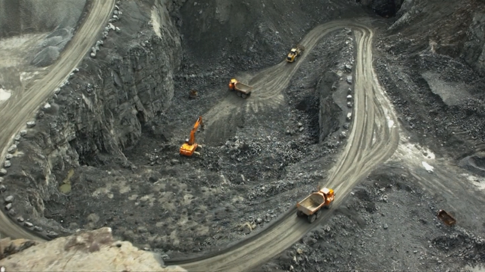

Daño irreparable: Estas son las 5 causas que están llevando a la extinción de un millón de especies de animales |
“Estamos perdiendo biodiversidad, especies, a una tasa histórica, potencialmente 500 mil a un millón de especies están amenazadas de pérdida”.
Así define sir Robert Watson, director Intergovernmental Science-Policy Platform on Biodiversity and Ecosystem Services (Ipbes), el peligro inmediato en el que se encuentra nuestro planeta y una parte importante de su biodiversidad.
La explotación de los suelos, la caza de animales, cambio climático, la contaminación y las especies invasoras son las cinco causas de un declive sin precedentes de nuestra diversidad de flora y fauna.
Esa es la conclusión a la que llegaron 145 expertos de 50 países en el informe de la Plataforma Intergubernamental Sobre Biodiversidad y Servicios Ecosistémicos dados a conocer este lunes y que contó con la participación de un chileno.
Aníbal Pauchard, científico de la Universidad de Concepción, lo comenta apuntando que “la reducción del hábitat, que como científicos llamamos el cambio del uso del suelo, y también la destrucción del hábitat marino, la destrucción del hábitat sigue siendo el forzante más importante a nivel global”.
“Hay muchas especies individuales y hábitat que están sufriendo tan significativamente que van hacia la extinción y la extinción es permanente”, zanjó el doctor Kai Chan, científico del Centro de Sustentabilidad de Canadá
El panorama es preocupante, ya que de continuar repercutirá en todos los aspectos de la vida en el planeta.